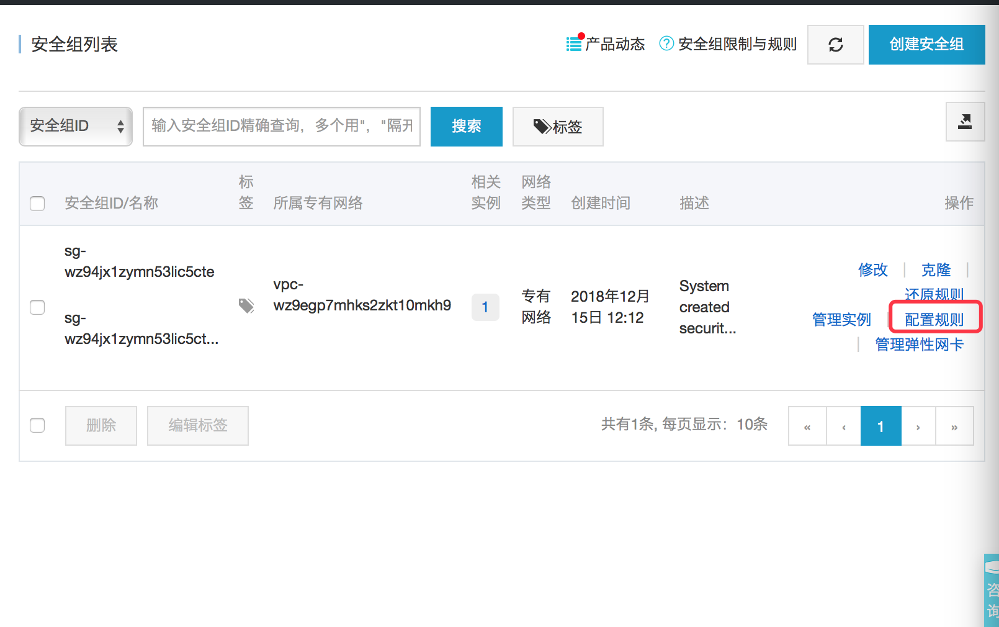

<!DOCTYPE html>
<html>
<head><meta name="generator" content="Hexo 3.8.0">
    <meta charset="UTF-8">
    <title>Hexo</title>
    <meta name="viewport" content="width=device-width, initial-scale=1, maximum-scale=1">
    <meta name="keywords" content>
    <meta name="description" content>
    
        <link rel="icon" href="/favicon.ico">
    
    
        
            <link rel="stylesheet" href="/lib/font-awesome/css/font-awesome.min.css">
        
            <link rel="stylesheet" href="/css/stage.css">
        
            <link rel="stylesheet" href="/css/avatar-bg.css">
        
    
</head>
</html>
<body>
<header id="header">
    <div class="menu">
        <i class="fa fa-bars"></i>
    </div>
    <div class="header-main">
        <h1><a href="/">Hexo</a></h1>
    </div>
    <div id="nav">
        <div class="nav-img" id="nav-img"></div>
        <div class="sentences">
            云里写诗，泥里生活，岁月里洒脱。
        </div>
    </div>
</header>

<div id="content-outer">
    <div id="content-inner">
        <div class="clearfix">
    
    <div id="recent-posts">
        
            <div class="post-item">
                <h1>
                    <a href="/2019/02/21/vim编辑器之神/">
                        vim编辑器之神
                    </a>
                </h1>
                <div class="create">
                    <span>Created</span>
                    
                        <time datetime="2019-02-21T11:04:07.920Z">
                            2019-02-21
                        </time>
                    
                    
                </div>
                
                    <h1 id="vim编辑器之神"><a href="#vim编辑器之神" class="headerlink" title="vim编辑器之神"></a>vim编辑器之神</h1><h3 id="配置vimrc配置"><a href="#配置vimrc配置" class="headerlink" title="配置vimrc配置"></a>配置vimrc配置</h3><p>在shell中可以通过 <code>vim ~/.vimrc</code> 或者 <code>vim /etc/vimrc</code> 打开vimrc文件对vim进行配置。在这个文件中可以进行很多和vim相关的配置，常用的如下（如果对其他配置感兴趣的可以自己百度）：</p>
<p> </p>
<h3 id="常用操作"><a href="#常用操作" class="headerlink" title="常用操作"></a>常用操作</h3><h4 id="1-模式切换"><a href="#1-模式切换" class="headerlink" title="1.模式切换"></a>1.模式切换</h4><p>我们可以将vim分为命令模式、编辑模式和末行模式三种<br><strong>命令模式：</strong>进入vim的时候vim是处于命令模式状态下的，这个时候输入内容不会出现在编辑区  (最末什么都没有)</p>
<p><strong>末行模式：</strong>在命令模式下输入冒号，让vim进入末行模式。在末行模式的冒号后面可以输入相关的一些指令进行相关操作  (最后有一个冒号)</p>
<p><strong>编辑模式：</strong>在命令模式下按’i’进入编辑模式。在编辑模式下可以对文件内容进行编辑 (最后 –INSERT– 或者 –插入–)  </p>
<p>####2.保存和退出<br>在末行模式下输入相应的指令可以对编辑区的内容进行保存和退出vim界面<br><strong>w</strong> – 只保存(类似快捷键ctr+s)<br><strong>q</strong> – 退出（在编辑区的内容全部都保存的情况下才有效）<br><strong>wq</strong> – 保存并退出<br><strong>q!</strong>  – 强制退出（不保存修改信息）    </p>
<p>####3.光标操作<br>以下光标操作都是在命令模式下输入的<br><strong>^(shift+6)</strong>  – 移动到行首<br><strong>$(shift+4)</strong>  – 移动到行尾<br><strong>G(shift+g)</strong>    – 移动到文件末尾<br><strong>行号G</strong>            – 移动到指定行,例如:30G, 让光标直接跳转到行号是30的那一行<br><strong>gg</strong>                – 移动到文件开头  </p>
<p>####4.文本操作<br>以下操作不带冒号的是在命令模式下输入，前面有冒号代码后面的内容是在末行模式下输入<br><strong>dd</strong>            – 删除光标所在的行<br><strong>数字dd</strong>        – 从光标所在行开始往后面开始删，删除指定数量行内容<br><strong>:%d</strong>        – 删除所有     </p>
<p><strong>yy</strong>         – 复制光标所在的行<br><strong>数字yy</strong>        – 从光标所在行开始复制指定行数的内容<br><strong>p</strong>            – 将复制的内容粘贴到光标所在的位置<br><strong>u</strong>            – 撤销<br><strong>ctr+r</strong>    – 反撤销    </p>
<p><strong>:%!sort</strong>  – 对内容排序  </p>
<p><strong>:/查找对象[/gice]</strong>    – 搜索匹配正则表达式的内容，按回车回到命令模式后按n往前查找，按N往后查找  </p>
<p>*<em>:1,$s/被替换对象/替换内容[/gice</em>]*    – 将正则表达式匹配到的内容替换成指定内容   </p>
<pre><code>-    g: 全局匹配  
-     i: 忽略大小写 
-   c: 替换时需要提示  
-   e: 忽略错误  
</code></pre>
                
                <div class="readmore">
                    <a href="/2019/02/21/vim编辑器之神/">
                        Read More
                    </a>
                </div>
            </div>
        
            <div class="post-item">
                <h1>
                    <a href="/2019/02/21/Nginx服务器安装/">
                        Nginx服务器
                    </a>
                </h1>
                <div class="create">
                    <span>Created</span>
                    
                        <time datetime="2019-02-21T11:04:07.918Z">
                            2019-02-21
                        </time>
                    
                    
                </div>
                
                    <h1 id="Nginx服务器"><a href="#Nginx服务器" class="headerlink" title="Nginx服务器"></a>Nginx服务器</h1><h3 id="1-阿里云添加80端口"><a href="#1-阿里云添加80端口" class="headerlink" title="1.阿里云添加80端口"></a>1.阿里云添加80端口</h3><p>阿里云上默认只有一个22端口用来做远程登录，如果希望在阿里云上安装支持http请求的nginx服务器，需要给阿里云添加80端口</p>
<p><br><br><br></p>
<h3 id="2-安装nginx"><a href="#2-安装nginx" class="headerlink" title="2. 安装nginx"></a>2. 安装nginx</h3><p>a) 添加nginx存储库  </p>
<figure class="highlight python"><table><tr><td class="gutter"><pre><span class="line">1</span><br></pre></td><td class="code"><pre><span class="line">yum install epel-release</span><br></pre></td></tr></table></figure>
<p>b) 安装nginx</p>
<figure class="highlight python"><table><tr><td class="gutter"><pre><span class="line">1</span><br></pre></td><td class="code"><pre><span class="line">yum install nginx</span><br></pre></td></tr></table></figure>
<p>c) 运行nginx<br>Nginx不会自行启动。要运行Nginx  </p>
<figure class="highlight plain"><table><tr><td class="gutter"><pre><span class="line">1</span><br></pre></td><td class="code"><pre><span class="line">systemctl start nginx</span><br></pre></td></tr></table></figure>
<p>nginx的运行命令:  </p>
<figure class="highlight plain"><table><tr><td class="gutter"><pre><span class="line">1</span><br><span class="line">2</span><br></pre></td><td class="code"><pre><span class="line">systemctl status nginx 查看nginx的状态  </span><br><span class="line">systemctl start/stop/enable/disable nginx 启动/关闭/设置开机启动/禁止开机启动</span><br></pre></td></tr></table></figure>
<p>d) 系统启动时启动Nginx  </p>
<figure class="highlight plain"><table><tr><td class="gutter"><pre><span class="line">1</span><br></pre></td><td class="code"><pre><span class="line">systemctl enable nginx</span><br></pre></td></tr></table></figure>
<p>e）如果您正在运行防火墙，请运行以下命令以允许HTTP和HTTPS通信：   </p>
<figure class="highlight plain"><table><tr><td class="gutter"><pre><span class="line">1</span><br><span class="line">2</span><br><span class="line">3</span><br><span class="line">4</span><br><span class="line">5</span><br></pre></td><td class="code"><pre><span class="line">sudo firewall-cmd --permanent --zone=public --add-service=http </span><br><span class="line"></span><br><span class="line">sudo firewall-cmd --permanent --zone=public --add-service=https</span><br><span class="line"></span><br><span class="line">sudo firewall-cmd --reload</span><br></pre></td></tr></table></figure>
<h3 id="3-nginx目录共享配置"><a href="#3-nginx目录共享配置" class="headerlink" title="3.nginx目录共享配置"></a>3.nginx目录共享配置</h3><p>a) 在contOS目录中确定一个需要共享的文件夹，例如： /home/yuting<br>b) 打开 etc/nginx/nginx.conf 文件，设置server</p>
<figure class="highlight plain"><table><tr><td class="gutter"><pre><span class="line">1</span><br><span class="line">2</span><br><span class="line">3</span><br><span class="line">4</span><br><span class="line">5</span><br><span class="line">6</span><br><span class="line">7</span><br></pre></td><td class="code"><pre><span class="line">#共享设置 - 在浏览器中输入服务器ip地址，会展示共享目录的文件列表</span><br><span class="line">root /home/yuting;</span><br><span class="line">location / &#123;</span><br><span class="line">       autoindex on;</span><br><span class="line">       autoindex_exact_size on;</span><br><span class="line">       autoindex_localtime on;</span><br><span class="line">&#125;</span><br></pre></td></tr></table></figure>
<p>除了可以共享文件，还可以自定义页面</p>
<figure class="highlight plain"><table><tr><td class="gutter"><pre><span class="line">1</span><br><span class="line">2</span><br><span class="line">3</span><br><span class="line">4</span><br><span class="line">5</span><br></pre></td><td class="code"><pre><span class="line">#自定义服务器页面</span><br><span class="line">location / &#123;</span><br><span class="line">		root /home/yuting;</span><br><span class="line">		index index.html index.htm;</span><br><span class="line">&#125;</span><br></pre></td></tr></table></figure>
<p>注意： 如果出现权限问题，可以修改目录的权限  </p>
<h1 id="ssh密钥认证"><a href="#ssh密钥认证" class="headerlink" title="ssh密钥认证"></a>ssh密钥认证</h1><p>1.在主机和从机上执行：<code>ssh-keygen</code></p>
<p>2.在从机上执行:  <code>scp  id_rsa.pub  root@主机地址:~/.ssh/master.pub</code><br>(上面这条指令是将从机上的 id_rsa.pub文件拷贝传递给到主机的.ssh文件夹下，并且命名为’master.pub’)</p>
<p>3.在主机中的.ssh文件夹中创建authorized_keys文件： <code>touch authorized_keys</code> </p>
<p>4.修改文件authorized_keys的权限: <code>chmod 600  authorized_keys</code>  </p>
<p>5.将master.pub放进authorized_keys文件中:  <code>cat master.pub &gt;&gt;  authorized_keys</code></p>
<p>6.在操作主机的时候，需要主机能够自己免密访问自己就将自己的公钥放在自己的authorized_keys文件中</p>

                
                <div class="readmore">
                    <a href="/2019/02/21/Nginx服务器安装/">
                        Read More
                    </a>
                </div>
            </div>
        
            <div class="post-item">
                <h1>
                    <a href="/2019/02/21/MySQL配置/">
                        MySQL配置
                    </a>
                </h1>
                <div class="create">
                    <span>Created</span>
                    
                        <time datetime="2019-02-21T11:04:07.917Z">
                            2019-02-21
                        </time>
                    
                    
                </div>
                
                    <p>MySQL配置  </p>
<ol>
<li><p>下载MySQL源安装包: <code>wget http://dev.mysql.com/get/mysql57-community-release-el7-8.noarch.rpm</code>  </p>
</li>
<li><p>安装MySQL源: <code>yum localinstall mysql57-community-release-el7-8.noarch.rpm</code></p>
</li>
<li><p>安装MySQL:  <code>yum install mysql-community-server</code>  </p>
</li>
<li><p>设置开启启动MySQL服务: <code>systemctl enable mysqld</code>  </p>
</li>
<li>启动/重启MySQL服务：systemctl restart mysqld  </li>
<li>查看MySQL初始密码：grep ‘A temporary password’ /var/log/mysqld.log  </li>
<li>更改MySQL密码：mysqladmin -u root -p’旧密码’ password ‘新密码’<br>这里更改密码出了问题，更改失败，这是因为密码太过简单的原因。有两个接解决方法：</li>
</ol>
<p>　　　　方法一：把密码设置复杂点（这是最直接的方法）</p>
<p>　　　　方法二：关闭mysql密码强度验证(validate_password)</p>
<p>　　　　　　　　编辑配置文件：<code>vim /etc/my.cnf</code>， 增加这么一行validate_password=off</p>
<p>　　　　　　　　编辑后重启mysql服务：<code>systemctl restart mysqld</code>  
　　　　　　　　  
　　　　　　　　  </p>
<ol start="8">
<li>设置mysql能够远程访问:<br>a. 登录进MySQL:  <code>mysql -uroot -p密码</code><br>b. 增加一个用户给予访问权限: <code>grant all privileges on *.* to &#39;root&#39;@&#39;ip地址&#39; identified by &#39;密码&#39; with grant option;</code><br>c. 刷新权限：<code>flush privileges;­</code>  </li>
</ol>

                
                <div class="readmore">
                    <a href="/2019/02/21/MySQL配置/">
                        Read More
                    </a>
                </div>
            </div>
        
            <div class="post-item">
                <h1>
                    <a href="/2019/02/21/Hexo博客搭建/">
                        Hexo博客搭建
                    </a>
                </h1>
                <div class="create">
                    <span>Created</span>
                    
                        <time datetime="2019-02-21T11:04:07.916Z">
                            2019-02-21
                        </time>
                    
                    
                </div>
                
                    <p>Hexo博客搭建   </p>
<p>###1. 搭建博客<br>使用hexo搭建个人博客前需要先在自己的电脑上装好git和node.js   </p>
<ol>
<li>首先在自己的电脑上创建一个空的文件夹’Hexo’  </li>
<li>在gitbash中终端中通过<code>cd</code>指令进入到刚才创建的文件夹中   </li>
<li>输入指令 <code>npm install -g hexo</code> 安装Hexo  </li>
<li>输入指令 <code>hexo init</code> 进行初始化  </li>
<li>依次输入指令<code>npm install</code> <code>hexo server</code> 启动服务器<br>博客内容发生改变后可以通过<code>hexo clean</code> <code>hexo generate</code> <code>hexo deploy</code> <code>hexo server</code>刷新后重新启动    </li>
</ol>
<p>###2. 部署博客  </p>
<ol>
<li>在github上创建一个空的仓库，仓库名： <code>用户名.github.io</code>  </li>
<li><p>修改博客本地仓库中的配置文件（Hexo目录下的_config.yml文件）,在文件末尾添加一下选中内容<br>  </p>
</li>
<li><p>使用git部署, 输入指令<code>npm install hexo-deployer-git --save</code>  </p>
</li>
<li>输入指令<code>hexo clean</code> <code>hexo generate</code> <code>hexo deploy</code> 对博客进行提交</li>
</ol>

                
                <div class="readmore">
                    <a href="/2019/02/21/Hexo博客搭建/">
                        Read More
                    </a>
                </div>
            </div>
        
            <div class="post-item">
                <h1>
                    <a href="/2019/02/21/git常用指令/">
                        git常用指令
                    </a>
                </h1>
                <div class="create">
                    <span>Created</span>
                    
                        <time datetime="2019-02-21T11:04:07.914Z">
                            2019-02-21
                        </time>
                    
                    
                </div>
                
                    <h1 id="git常用指令"><a href="#git常用指令" class="headerlink" title="git常用指令"></a>git常用指令</h1><h2 id="1-基本指令"><a href="#1-基本指令" class="headerlink" title="1.基本指令"></a>1.基本指令</h2><p><code>git init</code> &nbsp;&nbsp;&nbsp;&nbsp;&nbsp; ——  新建git仓库<br><code>git add 文件/文件夹</code> &nbsp;&nbsp;&nbsp;&nbsp;&nbsp; ——  将文件添加到缓存区中<br><code>git add -A</code> &nbsp;&nbsp;&nbsp;&nbsp;&nbsp; — 添加所有内容到缓存区中<br><code>git stutas</code> &nbsp;&nbsp;&nbsp;&nbsp;&nbsp;———    查看git状态<br><code>git commit -m  ‘提交信息’</code>  &nbsp;&nbsp;&nbsp;&nbsp;&nbsp;——  将缓存区中的内容全部提交到git本地仓库中  </p>
<p><code>git log</code>   &nbsp;&nbsp;&nbsp;&nbsp;&nbsp;——-    查看提交日志  </p>
<p><code>git reset  - - hard   HEAD</code>  &nbsp;&nbsp;&nbsp;&nbsp;&nbsp;——   让工作目录中的内容和仓库中的内容保持一致<br><code>git reset  --hard HEAD^</code>   &nbsp;&nbsp;&nbsp;&nbsp;&nbsp;——  回到上一个版本<br><code>git  reset  - - hard 版本号</code>  &nbsp;&nbsp;&nbsp;&nbsp;&nbsp;——  回到指定的版本<br><code>git checkout  - -  文件名</code>  &nbsp;&nbsp;&nbsp;&nbsp;&nbsp; ——  从暂存区中恢复工作目录中的内容(让工作区中的指定文件，回到上次提交的时候的状态)  </p>
<p><code>git clone &lt;url&gt;</code> - 将服务器上的项目(仓库)克隆 (使用https地址需要输入密码，使用ssh地址需要添加公钥)  </p>
<p><code>git remote add origin 地址</code>      &nbsp;&nbsp;&nbsp;&nbsp;&nbsp;—– 关联远程仓库(只需要关联一次)</p>
<p><code>git push [-u] origin master</code>  &nbsp;&nbsp;&nbsp;&nbsp;&nbsp;—– 提交(-u在第一次提交分之的时候才用)  </p>
<h2 id="2-分之管理"><a href="#2-分之管理" class="headerlink" title="2.分之管理"></a>2.分之管理</h2><p>创建仓库会默认给我们创建一个master分之,这个分之一般作为提交和发布分之;开发一般会自己创建一个develop分之，用来开发和测试;多人协作的时候还可能根据不同的人或者(不同的功能)创建不同的分之，用来独立开发  </p>
<p>常见分之： master(主要是合并develop), develop(主要合并下面的其他分支), 功能/人员分之(开发)  </p>
<p><code>git branch [-a]</code>   &nbsp;&nbsp;&nbsp;&nbsp;&nbsp;        - 查看分之<br><code>git branch 分之名</code>        &nbsp;&nbsp;&nbsp;&nbsp;&nbsp;- 创建分之<br><code>git checkout   分支名</code>        &nbsp;&nbsp;&nbsp;&nbsp;&nbsp;-   切换分之<br><code>git checkout -b 分之名</code>        &nbsp;&nbsp;&nbsp;&nbsp;&nbsp;    - 切换并创建新的分之<br><code>git diff    分之1  分之2</code>        &nbsp;&nbsp;&nbsp;&nbsp;&nbsp;- 查看两个分之之间的差异<br><code>git merge 分之名</code>            &nbsp;&nbsp;&nbsp;&nbsp;&nbsp;- 让当前分之和指定分之进行合并     </p>
<p>注意: 切换分之、push、pull，这些操作前要保证工作区是clean  </p>
<p>怎么避免冲突：  不要发生多个分之对同一个文件在同一个版本下进行修改(和同伴确认和商量)</p>

                
                <div class="readmore">
                    <a href="/2019/02/21/git常用指令/">
                        Read More
                    </a>
                </div>
            </div>
        
            <div class="post-item">
                <h1>
                    <a href="/2019/02/20/认识python/">
                        认识python
                    </a>
                </h1>
                <div class="create">
                    <span>Created</span>
                    
                        <time datetime="2019-02-20T12:48:11.324Z">
                            2019-02-20
                        </time>
                    
                    
                </div>
                
                    <p>#一、python常用快捷键</p>
<ul>
<li>ctrl + s    保存</li>
<li>ctrl + /    添加或取消单行注释</li>
<li>Ctrl + c      复制/拷贝</li>
<li>Ctrl + v      粘贴</li>
<li>Ctrl + x      剪切</li>
<li>Ctrl + z      撤销</li>
<li>Ctrl + shift + z      反撤销</li>
<li>Ctrl + a      全选</li>
<li>Ctrl + f      查找</li>
<li>Ctrl + r      替换</li>
<li>Ctrl + shift + f10   执行</li>
<li>按住 option(alt)不放，可以让编辑区同时出现多个光标<br><strong>注</strong>：<em>快捷键不止是适用于python</em></li>
</ul>
<p>#二、python基础语法</p>
<p>###1.注释<br><strong>定义</strong>：程序中的说明文字，不会被执行<br><strong><em>情况1：单行注释</em></strong><br>格式：# + 说明文字<br><figure class="highlight plain"><table><tr><td class="gutter"><pre><span class="line">1</span><br><span class="line">2</span><br><span class="line">3</span><br></pre></td><td class="code"><pre><span class="line">#这是声明一个变量</span><br><span class="line">name = &apos;小黄&apos;</span><br><span class="line">num = &apos;18&apos;  #这是一个变量，用来保存数字</span><br></pre></td></tr></table></figure></p>
<p><strong>注</strong>：代码上面注释无需空行，代码后面注释需要空2个空格<br><strong><em>情况2：多行注释</em></strong><br>格式：”””说明文字””” 或者’’’说明文字’’’<br>说明：前后双引号或者单引号各占一行</p>
<p>###2.标识符<br><strong>定义</strong>：程序中用来给变量、函数或者类命名使用<br><strong>要求</strong>：（python2.x）由字母、数字和下划线组成，并且数字不能开头.<br>示例：<br><figure class="highlight plain"><table><tr><td class="gutter"><pre><span class="line">1</span><br><span class="line">2</span><br><span class="line">3</span><br><span class="line">4</span><br></pre></td><td class="code"><pre><span class="line">abc = 100</span><br><span class="line">abc12 = 101</span><br><span class="line">12_abd = 232  #SyntaxError: invalid syntax  语法错误：无效语法</span><br><span class="line">adf*fd = 333  #SyntaxError: invalid syntax  语法错误：无效语法</span><br></pre></td></tr></table></figure></p>
<p><strong>注</strong>：（python3.x）中标识符除了ASCII码表还包含其他字符（可以包含中文），但为了让代码更加简单明了，所以还是按照2.x的要求来命名</p>
<p>###3.关键字（保留字）<br><strong>含义</strong>：python中自带的用来表示特殊功能或者特殊含义的一些标识符<br><em>python关键字</em><br><figure class="highlight plain"><table><tr><td class="gutter"><pre><span class="line">1</span><br><span class="line">2</span><br><span class="line">3</span><br><span class="line">4</span><br><span class="line">5</span><br></pre></td><td class="code"><pre><span class="line">&apos;False&apos;, &apos;None&apos;, &apos;True&apos;, &apos;and&apos;, &apos;as&apos;, &apos;assert&apos;, &apos;break&apos;, </span><br><span class="line">&apos;class&apos;, &apos;continue&apos;, &apos;def&apos;, &apos;del&apos;, &apos;elif&apos;, &apos;else&apos;, &apos;except&apos;, </span><br><span class="line">&apos;finally&apos;, &apos;for&apos;, &apos;from&apos;, &apos;global&apos;, &apos;if&apos;, &apos;import&apos;, &apos;in&apos;, &apos;is&apos;, </span><br><span class="line">&apos;lambda&apos;, &apos;nonlocal&apos;, &apos;not&apos;, &apos;or&apos;, &apos;pass&apos;, &apos;raise&apos;, &apos;return&apos;, &apos;try&apos;, </span><br><span class="line">&apos;while&apos;, &apos;with&apos;, &apos;yield&apos;</span><br></pre></td></tr></table></figure></p>
<p><strong><em>如何查询</em></strong>：<br><figure class="highlight plain"><table><tr><td class="gutter"><pre><span class="line">1</span><br><span class="line">2</span><br><span class="line">3</span><br><span class="line">4</span><br><span class="line">5</span><br></pre></td><td class="code"><pre><span class="line">import keyword  </span><br><span class="line"># import - 关键字，自带导入模块功能</span><br><span class="line"># keyword - python中自带的标准库</span><br><span class="line">print(keyword.kwlist)  #通过点方法去调用，打印python中的关键字</span><br><span class="line">in = 100  # 不能使用关键字命名</span><br></pre></td></tr></table></figure></p>
<p>###4.缩进<br><strong>定义</strong>：同一代码块前的缩进需要保持一致，否则会报错<br>示例：<br><figure class="highlight plain"><table><tr><td class="gutter"><pre><span class="line">1</span><br><span class="line">2</span><br><span class="line">3</span><br><span class="line">4</span><br></pre></td><td class="code"><pre><span class="line">print(&apos;hello python&apos;)   #  IndentationError: unexpected indent  缩进错误：意想不到的缩进</span><br><span class="line">num = 1</span><br><span class="line">if num == 1:</span><br><span class="line">print(&apos;缺少一个缩进&apos;)   #IndentationError: expected an indented block 缩进错误：缺少一个缩进块</span><br></pre></td></tr></table></figure></p>
<p>###5.一行显示多条语句<br>在多条语句之间加<strong>分号！！！</strong><br>示例：<br><figure class="highlight plain"><table><tr><td class="gutter"><pre><span class="line">1</span><br></pre></td><td class="code"><pre><span class="line">print(&apos;第一句&apos;）；print(&apos;第二句&apos;)</span><br></pre></td></tr></table></figure></p>
<p>###三、数据类型和字面量<br>python中常用的数据类型：数字类型，字符串<br><strong>数字类型</strong>：<br>| 类型           | 定义      | 示例             |<br>| ———— | ——- | ————– |<br>| 整型（int）      | 所有整数    | 100， 99，-20    |<br>| 浮点型（float）   | 所有小数    | 100.2， 12.5    |<br>| 复数型（complex） | 所有虚数    | 10+10j, 12+12j |<br>| 布尔型（bool）    | 两种结果的数据 | True, False    |<br><strong>字符串</strong>：<br><strong>定义</strong>：程序中的文本数据，值是通过单或者双引号括起来<br><strong>type函数</strong>:<br><strong>定义</strong>：获取数据的类型<br><strong>用法</strong>：type(数据)<br><strong>输入</strong>：数据<br><strong>输出</strong>：相应的类型名<br><strong>注</strong>：不会在控制台打印，需要通过print函数去打印</p>
<p>#四、变量<br><strong>定义</strong>：python中用来保存数据的容器（如果数据储存就会丢失）<br><strong><em>如何声明变量</em></strong><br><strong>基础语法</strong>：变量名 = 值<br><strong>说明</strong>：变量名 - 程序员自己命名的<br>要求：必须是<strong>标识符</strong>，不能是关键字<br>规范：<br>a.遵循<strong>pep8</strong>命名规范，所有字母小写，多个单词组成在单词之间加下划线(_)隔开<br>b.<strong>见名知义</strong>（即看见变量名就知道这个变量中存的是什么数据）<br><strong>=</strong> - 赋值符号，将=右边的值赋给左边的变量<br><strong>值</strong> - 所有有结果的表达式都可以作为值<br><em>情况1:单独声明一个变量</em><br>示例：<br><figure class="highlight plain"><table><tr><td class="gutter"><pre><span class="line">1</span><br><span class="line">2</span><br><span class="line">3</span><br><span class="line">4</span><br><span class="line">5</span><br></pre></td><td class="code"><pre><span class="line">dog_name = &apos;旺财&apos;</span><br><span class="line">print(dog_name)</span><br><span class="line">age = 18</span><br><span class="line">num = 100</span><br><span class="line"># in = 123  #错误！in是关键字</span><br></pre></td></tr></table></figure></p>
<p><em>情况2：a.同时声明多个变量，赋一样的值</em><br>示例：<br><figure class="highlight plain"><table><tr><td class="gutter"><pre><span class="line">1</span><br><span class="line">2</span><br><span class="line">3</span><br><span class="line">4</span><br></pre></td><td class="code"><pre><span class="line">num1 = num2 = num3 = 15</span><br><span class="line">print(num1, num2, num3)</span><br><span class="line"># 输出结果：</span><br><span class="line">15 15 15</span><br></pre></td></tr></table></figure></p>
<p><em>b.同时声明多个变量，赋不同的值</em><br><figure class="highlight plain"><table><tr><td class="gutter"><pre><span class="line">1</span><br><span class="line">2</span><br><span class="line">3</span><br><span class="line">4</span><br></pre></td><td class="code"><pre><span class="line">name, age, sex = &apos;小明&apos;， 20，&apos;男&apos;</span><br><span class="line">print(name, age, sex)</span><br><span class="line">#输出结果：</span><br><span class="line">小明 20 男</span><br></pre></td></tr></table></figure></p>
<p><strong>注意事项</strong>：<br><strong>a</strong>.变量必须先赋值再使用，不然程序会报错<br>示例：<br><figure class="highlight plain"><table><tr><td class="gutter"><pre><span class="line">1</span><br></pre></td><td class="code"><pre><span class="line">print(age)  # NameError: name &apos;score&apos; is not defined  名字错误：变量名未被定义</span><br></pre></td></tr></table></figure></p>
<p><strong>b</strong>.重复给同一个变量赋值，后面赋的值会覆盖前面赋的值<br>示例：<br><figure class="highlight plain"><table><tr><td class="gutter"><pre><span class="line">1</span><br><span class="line">2</span><br><span class="line">3</span><br><span class="line">4</span><br><span class="line">5</span><br></pre></td><td class="code"><pre><span class="line">abc = 1</span><br><span class="line">abc = 10</span><br><span class="line">print(abc)</span><br><span class="line"># 输出结果：</span><br><span class="line">10</span><br></pre></td></tr></table></figure></p>
<p><strong>c</strong>.同一个变量可以赋不同类型的值（python是动态语言）<br>示例：<br><figure class="highlight plain"><table><tr><td class="gutter"><pre><span class="line">1</span><br><span class="line">2</span><br><span class="line">3</span><br><span class="line">4</span><br></pre></td><td class="code"><pre><span class="line">num = 10</span><br><span class="line">print(type(num）)  #输出结果：&lt;class &apos;int&apos;&gt;</span><br><span class="line">num = &apos;abc&apos;</span><br><span class="line">print(type(num))  #输出结果：&lt;class &apos;str&apos;&gt;</span><br></pre></td></tr></table></figure></p>
<p><strong>补充：声明变量和给变量赋值的原理</strong></p>
<p><strong>原理</strong>：首先会在内存堆中开辟一个空间来储存值，然后给这个空间一个地址，再用栈中的变量来储存这个值对应的地址，不存在溢出，而c语言是根据声明变量的类型来决定变量的大小，所以会存在溢出现象</p>
<p>#五、print和input函数</p>
<p>#####print函数<br><strong>定义</strong>：在控制台打印它后面括号里的内容<br><strong>用法</strong>：<br><strong>输入</strong>：任意数据类型<br><strong>输出</strong>：不定<br>用法1：print(任意数据)，print(变量）<br>示例：<br><figure class="highlight plain"><table><tr><td class="gutter"><pre><span class="line">1</span><br><span class="line">2</span><br><span class="line">3</span><br><span class="line">4</span><br><span class="line">5</span><br></pre></td><td class="code"><pre><span class="line">print(100)  #100</span><br><span class="line">print(&apos;hello world&apos;)  #hello world</span><br><span class="line">print(True)  #True</span><br><span class="line">num = 1</span><br><span class="line">print(num)  #1</span><br></pre></td></tr></table></figure></p>
<p>用法2：print(数据1， 数据2， 数据3…)<br>说明：一行打印多个数据，多个数据之间用逗号隔开<br>示例：<br><figure class="highlight plain"><table><tr><td class="gutter"><pre><span class="line">1</span><br></pre></td><td class="code"><pre><span class="line">print(100, 12.3, &apos;afd&apos;)  #输出结果：100 12.3 afd</span><br></pre></td></tr></table></figure></p>
<p>用法3：自定义结尾（默认是换行）和多个内容之间的间隔（默认是空格）<br>示例：<br><figure class="highlight plain"><table><tr><td class="gutter"><pre><span class="line">1</span><br><span class="line">2</span><br><span class="line">3</span><br><span class="line">4</span><br><span class="line">5</span><br><span class="line">6</span><br></pre></td><td class="code"><pre><span class="line">print(&apos;第一行内容&apos;， end=&apos;$&apos;)  </span><br><span class="line"># end -&gt;取消换行，并以$符号连接第二行内容</span><br><span class="line">print(&apos;第二行内容&apos;)</span><br><span class="line">print(100, 12.3, &apos;afd&apos;, sep=&apos;%&apos;)  #输出结果：100%12.3%afd</span><br><span class="line"># sep -&gt;在多个数据间采用某一指定符号连接</span><br><span class="line"># 本句是采用%连接几个数据</span><br></pre></td></tr></table></figure></p>
<p>#####input函数<br><strong>定义</strong>：获取从控制台输入的内容，输入完回车<br><strong>用法</strong>：input（提示信息）<br><strong>输入</strong>：任意数据类型<br><strong>输出</strong>：字符串<br>示例：<br><figure class="highlight plain"><table><tr><td class="gutter"><pre><span class="line">1</span><br><span class="line">2</span><br></pre></td><td class="code"><pre><span class="line">content = input(&apos;请输入：&apos;)</span><br><span class="line">print(content, type(content)  # 输入的数据 &lt;class &apos;str&apos;&gt;</span><br></pre></td></tr></table></figure></p>
<p><strong>注</strong>：当程序执行到此时，如果用户不输入内容，会阻塞线程</p>

                
                <div class="readmore">
                    <a href="/2019/02/20/认识python/">
                        Read More
                    </a>
                </div>
            </div>
        
            <div class="post-item">
                <h1>
                    <a href="/2019/02/20/MarkDown基础语法/">
                        MarkDown基础语法
                    </a>
                </h1>
                <div class="create">
                    <span>Created</span>
                    
                        <time datetime="2019-02-20T12:41:07.865Z">
                            2019-02-20
                        </time>
                    
                    
                </div>
                
                    <p>#####Markdown是什么？<br>它是一种纯文本格式标记语言。</p>
<p>#####目的<br>通过markdown可以使普通文本具有一定的格式，便于阅读。</p>
<p>#####输入的是什么？<br>1.普通文本<br>2.语法符号</p>
<p>#####优点：<br>1.纯文本，只要支持markdown就可以获得一样的格式效果<br>2.操纵简单。</p>
<p>#####缺点：<br>1.需要记忆一些语法<br>2.有些平台不支持Markdown编辑模式<br><figure class="highlight plain"><table><tr><td class="gutter"><pre><span class="line">1</span><br></pre></td><td class="code"><pre><span class="line">简书开启markdown方式：设置-&gt;默认编辑器-&gt;Markdown编辑器</span><br></pre></td></tr></table></figure></p>
<p>#一、标题<br>语法：#*n(1~6）+ title<br><strong>#</strong> - 语法符号<br><strong>title</strong> - 标题内容<br>注：最长支持6级标题<br>示例:<br><figure class="highlight plain"><table><tr><td class="gutter"><pre><span class="line">1</span><br><span class="line">2</span><br><span class="line">3</span><br><span class="line">4</span><br><span class="line">5</span><br><span class="line">6</span><br></pre></td><td class="code"><pre><span class="line">#这是一级标题</span><br><span class="line">##这是二级标题</span><br><span class="line">###这是三级标题</span><br><span class="line">####这是四级标题</span><br><span class="line">#####这是五级标题</span><br><span class="line">######这是六级标题</span><br></pre></td></tr></table></figure></p>
<p>效果：</p>
<p>#这是一级标题</p>
<p>##这是二级标题</p>
<p>###这是三级标题</p>
<p>####这是四级标题</p>
<p>#####这是五级标题</p>
<p>######这是六级标题</p>
<p>#二、字体</p>
<ul>
<li><em>斜体</em><br>语法：*要倾斜内容* - 内容前后加1个*号</li>
<li><strong>加粗</strong><br>语法：**要加粗内容** - 内容前后加2个*号</li>
<li><strong><em>斜体加粗</em></strong><br>语法：***要斜体加粗内容*** - 前后加3个*号</li>
<li><del>删除线</del><br>语法：~~删除线内容~~ - 前后加2个~号<br>示例：<figure class="highlight plain"><table><tr><td class="gutter"><pre><span class="line">1</span><br><span class="line">2</span><br><span class="line">3</span><br><span class="line">4</span><br></pre></td><td class="code"><pre><span class="line">**这是加粗的内容**</span><br><span class="line">*这是倾斜的内容*</span><br><span class="line">***这是倾斜加粗的内容***</span><br><span class="line">~~这是删除线内容~~</span><br></pre></td></tr></table></figure>
</li>
</ul>
<p>效果：<br><strong>这是加粗的内容</strong><br><em>这是倾斜的内容</em><br><strong><em>这是倾斜加粗的内容</em></strong><br><del>这是删除线内容</del></p>
<p>#三、引用<br>语法：>*n(1~n)<br>> - 语法符号<br>n - >的个数，理论上1到正无穷</p>
<p>示例：<br><figure class="highlight plain"><table><tr><td class="gutter"><pre><span class="line">1</span><br><span class="line">2</span><br><span class="line">3</span><br></pre></td><td class="code"><pre><span class="line">&gt;这是引用的内容</span><br><span class="line">&gt;&gt;这也是引用的内容</span><br><span class="line">&gt;&gt;&gt;&gt;&gt;这还是引用的内容</span><br></pre></td></tr></table></figure></p>
<p>效果：</p>
<blockquote>
<p>这是引用的内容</p>
<blockquote>
<p>这也是引用的内容</p>
<blockquote>
<blockquote>
<blockquote>
<p>这还是引用的内容</p>
</blockquote>
</blockquote>
</blockquote>
</blockquote>
</blockquote>
<p>#四、分割线<br>语法：3个或3个以上-或*<br>示例：<br><figure class="highlight plain"><table><tr><td class="gutter"><pre><span class="line">1</span><br><span class="line">2</span><br><span class="line">3</span><br><span class="line">4</span><br></pre></td><td class="code"><pre><span class="line">---</span><br><span class="line">-----</span><br><span class="line">***</span><br><span class="line">*****</span><br></pre></td></tr></table></figure></p>
<p>效果：</p>
<h2 id="显示一样"><a href="#显示一样" class="headerlink" title="显示一样"></a>显示一样</h2><hr>
<hr>
<hr>
<p>#五、图片<br>语法：<br><br>图片alt - 显示在图片下方的文字<br>图片title - 就是图片的标题，移到图片上显示，title可有可无<br>示例：<br><figure class="highlight plain"><table><tr><td class="gutter"><pre><span class="line">1</span><br></pre></td><td class="code"><pre><span class="line"></span><br></pre></td></tr></table></figure></p>
<p>效果：<br></p>
<p>#六、超链接<br>语法：<br>[超链接名](超链接地址”超链接title”)title可有可无<br>示例：<br><figure class="highlight plain"><table><tr><td class="gutter"><pre><span class="line">1</span><br><span class="line">2</span><br></pre></td><td class="code"><pre><span class="line">[简书](https://www.jianshu.com)</span><br><span class="line">[百度](https://www.baidu.com)</span><br></pre></td></tr></table></figure></p>
<p>效果:<br><a href="https://www.jianshu.com" target="_blank" rel="noopener">简书</a><br><a href="https://www.baidu.com" target="_blank" rel="noopener">百度</a></p>
<p>注明：Markdown语法不支持链接在新界面中打开，故想在新页面中打开可以使用html语言中的a标签代替<br><figure class="highlight plain"><table><tr><td class="gutter"><pre><span class="line">1</span><br><span class="line">2</span><br><span class="line">3</span><br></pre></td><td class="code"><pre><span class="line">&lt;a href=&quot;超链接地址&quot; target=&quot;_blank&quot;&gt;超链接名字&lt;/a&gt;</span><br><span class="line">示例：</span><br><span class="line">&lt;a href=&quot;https://www.baidu.com&quot; target=&quot;_blank&quot;&gt;百度一下&lt;/a&gt;</span><br></pre></td></tr></table></figure></p>
<p>#七、列表</p>
<ul>
<li><strong>无序列表</strong><br>语法：<br>- + * 任选其一均可</li>
</ul>
<figure class="highlight plain"><table><tr><td class="gutter"><pre><span class="line">1</span><br><span class="line">2</span><br><span class="line">3</span><br></pre></td><td class="code"><pre><span class="line">- 列表内容</span><br><span class="line">+ 列表内容</span><br><span class="line">* 列表内容</span><br></pre></td></tr></table></figure>
<p>效果：显示一样</p>
<ul>
<li>列表内容</li>
</ul>
<ul>
<li>列表内容</li>
</ul>
<ul>
<li>列表内容</li>
</ul>
<p><strong>注明</strong>：语法符号与内容间用1个空格隔开</p>
<ul>
<li><strong>有序列表</strong><br>语法：数字大小表示顺序然后加点(n.)<br>示例：<figure class="highlight plain"><table><tr><td class="gutter"><pre><span class="line">1</span><br><span class="line">2</span><br><span class="line">3</span><br></pre></td><td class="code"><pre><span class="line">1. 列表内容</span><br><span class="line">2. 列表内容</span><br><span class="line">3. 列表内容</span><br></pre></td></tr></table></figure>
</li>
</ul>
<p>效果：没有什么不同<br>1 . 列表内容<br>2 . 列表内容<br>3 . 列表内容</p>
<ul>
<li><strong>列表嵌套</strong><br>语法：上级列表和下级列表间敲3个空格<br>示例：<figure class="highlight plain"><table><tr><td class="gutter"><pre><span class="line">1</span><br><span class="line">2</span><br><span class="line">3</span><br><span class="line">4</span><br><span class="line">5</span><br><span class="line">6</span><br><span class="line">7</span><br><span class="line">8</span><br><span class="line">9</span><br><span class="line">10</span><br><span class="line">11</span><br><span class="line">12</span><br><span class="line">13</span><br></pre></td><td class="code"><pre><span class="line">- 一级无序内容</span><br><span class="line">   - 二级无序内容</span><br><span class="line">   - 二级无序内容</span><br><span class="line">- 一级无序内容</span><br><span class="line"></span><br><span class="line">  1.二级有序内容</span><br><span class="line">  2.二级有序内容</span><br><span class="line">1. 一级有序内容</span><br><span class="line">    - 二级无序内容 </span><br><span class="line">    - 二级无序内容</span><br><span class="line">2. 一级有序内容</span><br><span class="line">  1.二级有序内容</span><br><span class="line">    2.二级有序内容</span><br></pre></td></tr></table></figure>
</li>
</ul>
<p>效果：</p>
<ul>
<li>一级无序内容<ul>
<li>二级无序内容</li>
<li>二级无序内容</li>
</ul>
</li>
<li><p>一级无序内容</p>
<p>1.二级有序内容<br>2.二级有序内容</p>
</li>
</ul>
<ol>
<li>一级有序内容<ul>
<li>二级无序内容 </li>
<li>二级无序内容</li>
</ul>
</li>
<li>一级有序内容<br>1.二级有序内容<br> 2.二级有序内容<br>#八、表格<br>语法：<figure class="highlight plain"><table><tr><td class="gutter"><pre><span class="line">1</span><br><span class="line">2</span><br><span class="line">3</span><br><span class="line">4</span><br><span class="line">5</span><br><span class="line">6</span><br><span class="line">7</span><br><span class="line">8</span><br></pre></td><td class="code"><pre><span class="line">表头|表头|表头</span><br><span class="line">---|：--：|---：</span><br><span class="line">内容|内容|内容</span><br><span class="line">内容|内容|内容</span><br><span class="line">-  一个即可，多加目的：对齐</span><br><span class="line">： 哪边加，文字往哪边靠，</span><br><span class="line">   两边都加就居中</span><br><span class="line">注：原生态语法两边用|包起来</span><br></pre></td></tr></table></figure>
</li>
</ol>
<p>示例：<br><figure class="highlight plain"><table><tr><td class="gutter"><pre><span class="line">1</span><br><span class="line">2</span><br><span class="line">3</span><br><span class="line">4</span><br><span class="line">5</span><br></pre></td><td class="code"><pre><span class="line">菜单|价格|名气</span><br><span class="line">---| --- |---</span><br><span class="line">鱼香肉丝|18|排名第一</span><br><span class="line">土豆肉丝|12|排名第五</span><br><span class="line">青椒肉丝|15|排名第三</span><br></pre></td></tr></table></figure></p>
<p>效果：<br>| 菜单   | 价格   | 名气   |<br>| —- | —- | —- |<br>| 鱼香肉丝 | 18   | 排名第一 |<br>| 土豆肉丝 | 12   | 排名第五 |<br>| 青椒肉丝 | 15   | 排名第三 |</p>
<p>#九、代码<br>语法：<br>单行：`代码内容` - 内容前后用`连接（是~下面的符号）<br><figure class="highlight plain"><table><tr><td class="gutter"><pre><span class="line">1</span><br></pre></td><td class="code"><pre><span class="line">`代码内容`</span><br></pre></td></tr></table></figure></p>
<p>代码块：\<figure class="highlight plain"><figcaption><span>- 内容前后用3个`连接，且语法符号各占一行</span></figcaption><table><tr><td class="gutter"><pre><span class="line">1</span><br><span class="line">2</span><br><span class="line">3</span><br><span class="line">4</span><br><span class="line">5</span><br><span class="line">6</span><br></pre></td><td class="code"><pre><span class="line">```</span><br><span class="line">(```）</span><br><span class="line">代码1</span><br><span class="line">代码2</span><br><span class="line">代码3</span><br><span class="line">（```）</span><br></pre></td></tr></table></figure></p>
<p>注：括号只是用来防止转义<br>示例：<br>单行代码<br><figure class="highlight plain"><table><tr><td class="gutter"><pre><span class="line">1</span><br></pre></td><td class="code"><pre><span class="line">`hello world`</span><br></pre></td></tr></table></figure></p>
<p>效果：<br><code>hello world</code><br>代码块<br><figure class="highlight plain"><table><tr><td class="gutter"><pre><span class="line">1</span><br><span class="line">2</span><br><span class="line">3</span><br></pre></td><td class="code"><pre><span class="line">(```)</span><br><span class="line">print(&apos;厉害了我的歌&apos;) </span><br><span class="line">(```)</span><br></pre></td></tr></table></figure></p>
<p>效果:<br><figure class="highlight plain"><table><tr><td class="gutter"><pre><span class="line">1</span><br></pre></td><td class="code"><pre><span class="line">print(&apos;厉害了我的歌&apos;)</span><br></pre></td></tr></table></figure></p>

                
                <div class="readmore">
                    <a href="/2019/02/20/MarkDown基础语法/">
                        Read More
                    </a>
                </div>
            </div>
        
            <div class="post-item">
                <h1>
                    <a href="/2019/02/20/hello-world/">
                        Hello World
                    </a>
                </h1>
                <div class="create">
                    <span>Created</span>
                    
                        <time datetime="2019-02-20T11:55:06.700Z">
                            2019-02-20
                        </time>
                    
                    
                </div>
                
                    <p>Welcome to <a href="https://hexo.io/" target="_blank" rel="noopener">Hexo</a>! This is your very first post. Check <a href="https://hexo.io/docs/" target="_blank" rel="noopener">documentation</a> for more info. If you get any problems when using Hexo, you can find the answer in <a href="https://hexo.io/docs/troubleshooting.html" target="_blank" rel="noopener">troubleshooting</a> or you can ask me on <a href="https://github.com/hexojs/hexo/issues" target="_blank" rel="noopener">GitHub</a>.</p>
<h2 id="Quick-Start"><a href="#Quick-Start" class="headerlink" title="Quick Start"></a>Quick Start</h2><h3 id="Create-a-new-post"><a href="#Create-a-new-post" class="headerlink" title="Create a new post"></a>Create a new post</h3><figure class="highlight bash"><table><tr><td class="gutter"><pre><span class="line">1</span><br></pre></td><td class="code"><pre><span class="line">$ hexo new <span class="string">"My New Post"</span></span><br></pre></td></tr></table></figure>
<p>More info: <a href="https://hexo.io/docs/writing.html" target="_blank" rel="noopener">Writing</a></p>
<h3 id="Run-server"><a href="#Run-server" class="headerlink" title="Run server"></a>Run server</h3><figure class="highlight bash"><table><tr><td class="gutter"><pre><span class="line">1</span><br></pre></td><td class="code"><pre><span class="line">$ hexo server</span><br></pre></td></tr></table></figure>
<p>More info: <a href="https://hexo.io/docs/server.html" target="_blank" rel="noopener">Server</a></p>
<h3 id="Generate-static-files"><a href="#Generate-static-files" class="headerlink" title="Generate static files"></a>Generate static files</h3><figure class="highlight bash"><table><tr><td class="gutter"><pre><span class="line">1</span><br></pre></td><td class="code"><pre><span class="line">$ hexo generate</span><br></pre></td></tr></table></figure>
<p>More info: <a href="https://hexo.io/docs/generating.html" target="_blank" rel="noopener">Generating</a></p>
<h3 id="Deploy-to-remote-sites"><a href="#Deploy-to-remote-sites" class="headerlink" title="Deploy to remote sites"></a>Deploy to remote sites</h3><figure class="highlight bash"><table><tr><td class="gutter"><pre><span class="line">1</span><br></pre></td><td class="code"><pre><span class="line">$ hexo deploy</span><br></pre></td></tr></table></figure>
<p>More info: <a href="https://hexo.io/docs/deployment.html" target="_blank" rel="noopener">Deployment</a></p>

                
                <div class="readmore">
                    <a href="/2019/02/20/hello-world/">
                        Read More
                    </a>
                </div>
            </div>
        
    </div>


    <div id="content-aside">
    <div class="content-aside-owner">
        <div id="owner">
    <div class="avatar-bg">
        <div class="index-page">
            <div class="banner">
                <div class="slide slide1">
                    <div class="bg-wrapper">
                        <div class="bg" id="container_left">
                            <div id="canvas_left"></div>
                        </div>
                    </div>
                </div>
                <div class="slide slide2">
                    <div class="bg-wrapper">
                        <div class="bg" id="container_right">
                            <div id="canvas_right"></div>
                        </div>
                    </div>
                </div>
            </div>
        </div>
    </div>
    <a href="/"></a>
    <a href="/"><h3 class="author">John Doe</h3></a>
    <h4></h4>
    <div class="social">
        
            
              <a href="https://github.com/markyong" title="github" class="fa fa-github" target="_blank"></a>
            
        
            
              <a href="#" title="weibo" class="fa fa-weibo" target="_blank"></a>
            
        
    </div>
</div>
    </div>
    
        <div class="content-aside-about">
            <h2>
                <a href="/about">About</a>
            </h2>
        </div>
    
    <div class="content-aside-tags">
        <h2>
            <a href="/tags">
                Tags
                <sup style="font-size: 12px">
                    [0]
                </sup>
            </a>
        </h2>
    </div>
    
<aside id="categories">
    <h2>Categories</h2>
    
        <p>None.</p>
    
</aside>

    
<aside id="acchives">
    <h2>Archives</h2>
    
    <ul class="archive-list"><li class="archive-list-item"><a class="archive-list-link" href="/archives/2019/02/">February 2019</a></li></ul>
    
</aside>

</div>

</div>
<nav id="pagination" class="clearfix">
    <span class="page-number current">1</span>
</nav>

    </div>
</div>
<footer id="footer">
    <div id="copyright">&copy; John Doe  2019</div>
    <div id="theme">
        Powered by <a href="http://hexo.io">Hexo</a>. Theme by <a href="https://github.com/markyong/hexo-theme-stage">Stage</a>
    </div>
</footer>
<script src="/lib/js/waterrippleeffect.min.js"></script>
<script src="/js/header-bg.main.js"></script>

    <script src="/lib/js/cav.js"></script>
    <script src="/js/avatar-bg.main.js"></script>

</body>
</html>
